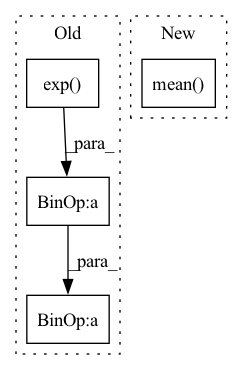

Pattern ID :17112

Before Change
// numerical crimes follow
// q = b ** -x_
q = x_.exp()
sd = s*d
// bdp, bdm = b**d, b**-d
sdm, sdp = (-sd).exp(), sd.exp()
// // censoring
lo_cens = x <= self.lo
hi_cens = x >= self.hi
ones = torch.ones_like(q)
zeros = torch.zeros_like(q)
diff_term = torch.where(
lo_cens | hi_cens, ones, sdp - sdm).log()
// sdm_term = torch.where(
// hi_cens, ones, (q + sdm)).log()
sdm_term = torch.where(hi_cens, zeros, x_ + F.softplus(-sd-x_))
// sdp_term = torch.where(
// lo_cens, ones, (q + sdp)).log()
sdp_term = torch.where(lo_cens, zeros, x_ + F.softplus(sd-x_))
x_or_sd = torch.where(hi_cens, sd, x_)
log_delta_cdf = (
x_or_sd + diff_term - sdm_term - sdp_term
)
// log prob
After Change
r |= {
// "min_sharpness": s.min(),
"max_sharpness": s.max(),
"mean_sharpness": (s*log_pi.exp()).sum(-1).mean(),
// "min_entropy": ent.min(),
// "max_entropy": ent.max(),
"mean_cmp_entropy": ent.mean(),
In pattern: SUPERPATTERN
Frequency: 3
Non-data size: 4
Instances
Fragment ID: 57266185
Project Name: intelligent-instruments-lab/iil-python-tools
Commit Name: 3cfb0feff3aa13a704a8a16302c1d7bbde37807f
Time: 2022-03-17
Author: victor.shepardson@gmail.com
File Name: notepredictor/notepredictor/distributions.py
M Class Name: CensoredMixtureLogistic
N Class Name: CensoredMixtureLogistic
M Method Name: forward(3)
N Method Name: forward(3)
M Parent Class: nn.Module
N Parent Class: nn.Module
M File Name: notepredictor/notepredictor/distributions.py
N File Name: notepredictor/notepredictor/distributions.py
M Start Line: 53
M End Line: 99
N Start Line: 54
N End Line: 86
'>
Before Change
-(
a_dist.probs
* (
-log_alpha.exp()
* (torch.log_softmax(a_dist.logits, dim=1) + target_entropy)
)
)
.sum(1)
After Change
a_dist = agent.actor(agent.encoder(o))
if discrete:
entropy = -(a_dist.probs * torch.log_softmax(a_dist.logits, dim=1)).sum(1)
alpha_loss = -(log_alpha * (target_entropy - entropy)).mean()
else:
logp_a = (
a_dist.log_prob(a_dist.sample()).sum(-1, keepdim=True).clamp(-100.0, 100.0)
)
'>
Fragment ID: 57266216
Project Name: jakegrigsby/super_sac
Commit Name: a9f204f14bce211ab5e3c167f656836823225360
Time: 2021-10-01
Author: jcg6dn@virginia.edu
File Name: uafbc/learning.py
M Class Name: AnonimousClass
N Class Name: AnonimousClass
M Method Name: alpha_update(9)
N Method Name: alpha_update(9)
M Parent Class:
N Parent Class:
M File Name: uafbc/learning.py
N File Name: uafbc/learning.py
M Start Line: 182
M End Line: 191
N Start Line: 182
N End Line: 183
'>
Before Change
// Numerical stability mixture and loglik
log_max = torch.amax(log, dim=2, keepdim=True) // [1,1,K] (collapsed joints)
lik = weights * torch.exp(log - log_max) // Take max
loglik = torch.log(torch.sum(lik, dim=2, keepdim=True)) + log_max // Return max
loglik = loglik * mask // replace with mask
loss = -torch.mean(loglik)
After Change
loglik = loglik * mask
mean = torch.sum(weights * lambdas, axis=-1, keepdims=True)
reglrz = torch.mean(torch.square(y - mean) * mask)
loss = -torch.mean(loglik) + 0.001 * reglrz
return loss
def __call__(
'>
Fragment ID: 57266176
Project Name: nixtla/neuralforecast
Commit Name: e0011be5ea3be6d2eb3291c8c12b4f130e244002
Time: 2023-03-30
Author: kin.gtz.olivares@gmail.com
File Name: neuralforecast/losses/pytorch.py
M Class Name: PMM
N Class Name: PMM
M Method Name: neglog_likelihood(4)
N Method Name: neglog_likelihood(4)
M Parent Class: torch.nn.Module
N Parent Class: torch.nn.Module
M File Name: neuralforecast/losses/pytorch.py
N File Name: neuralforecast/losses/pytorch.py
M Start Line: 1404
M End Line: 1422
N Start Line: 1413
N End Line: 1438